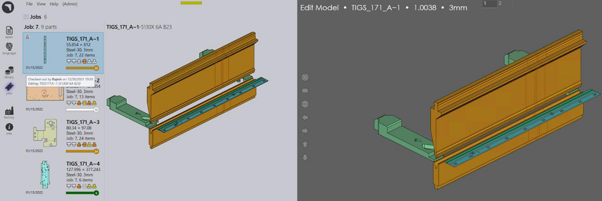
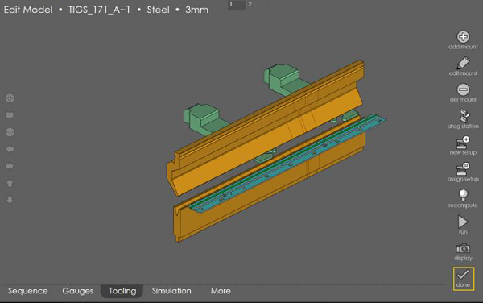
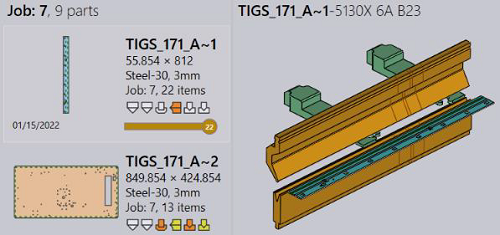

Switch to the Edit page in RightAngle. Select the program you want to edit and press the edit toolbar command. RA check-out the program from the Praxis repository and opens it in the edit mode. The part tile and tooltip in Praxis reflects the check-out status and reason.

Apply a tooling change and press done to save the program back to Praxis. The program is saved and used from next time onwards.
